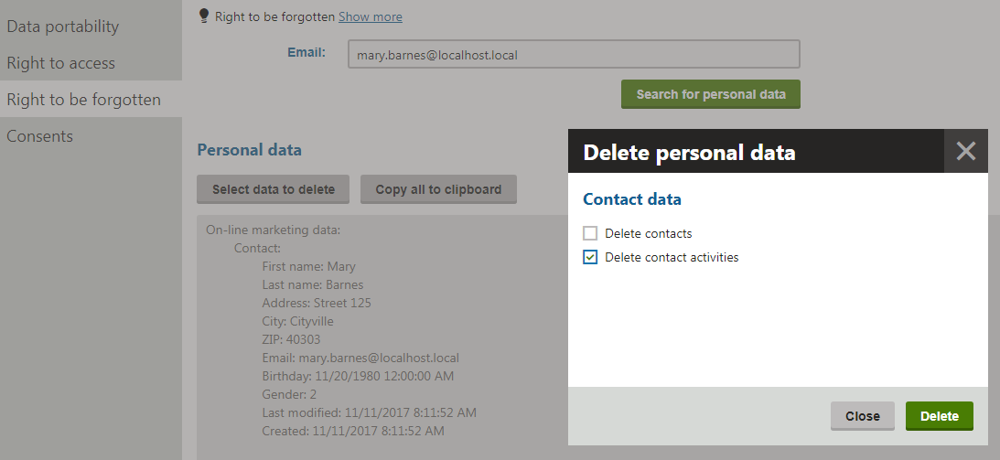

Implementing personal data erasure
To comply with the requirements of personal data regulations, such as the GDPR, you need to provide a way for administrators (data protection officers) to erase personal data stored within the system. This is necessary to fulfill the "right to be forgotten" of your website's visitors and users, i.e. when resolving requests to delete personal data for specific data subjects.
By default, Kentico does not provide any functionality for erasing personal data. You need to implement the data erasure based on exact knowledge of your specific website, including the following factors:
How the website gathers, processes and stores personal data
The nature of the legal requirements that you wish to fulfill
Other legal considerations that allow or require the website's owner to hold personal data (for example e-commerce records for accounting purposes, etc.)
Depending on these requirements, your personal data erasure functionality may need to completely delete objects, clear values of individual object fields (columns), or perform anonymization of certain types of data while retaining others.
See the Personal data in Kentico reference to learn how the system gathers, stores and uses personal data by default. The information may be helpful when planning the data erasure functionality for your website.
Kentico EMS required
Features described on this page require the Kentico EMS license.
Use the following process to develop the personal data erasure:
Prerequisite: Before you start implementing personal data erasure, you need to prepare functionality that identifies and collects the given data. For detailed information, see Implementing personal data collection.
Open your Kentico solution in Visual Studio.
Create custom classes that perform the required delete actions – Data erasers. See the Creating data erasers section for details.
Class location
We recommend adding custom classes as part of a new assembly (Class library project) in your Kentico solution. You need to add the appropriate references to both the assembly and the main Kentico web project.
Create a custom control in the Kentico web project to define the options that users can configure when deleting personal data. See Defining the eraser configuration.
Add a custom module class or edit an existing one. Register your data eraser implementations and eraser configuration control within the module's OnInit method:
You can register any number of data erasers and a single configuration control.
To register data erasers, call the PersonalDataEraserRegister.Instance.Add method (available in the CMS.DataProtection namespace). The system runs the delete actions defined within individual erasers according to the registration order (starting from the first data eraser to the last).
To register your eraser configuration control, call the DataProtectionControlsRegister.Instance.RegisterErasureConfigurationControl method (available in the CMS.UIControls namespace). Specify the path of the user control file in the method's parameter.
Users can now delete personal data on the Right to be forgotten tab of the Data protection application. The registered configuration control defines the content of the dialog where users choose which types of data are erased, and the data eraser implementations then perform the corresponding delete actions.
Creating data erasers
When deleting personal data in the Data protection application, users first submit real-world identifiers to find the appropriate data within the system. The registered Identity collectors (see Implementing personal data collection) convert these identifiers into Kentico objects, and Data collectors return the related personal data. To allow users to delete the collected data, you need to create Data erasers.
Data erasers are classes that implement the IPersonalDataEraser interface (available in the CMS.DataProtection namespace). Every implementation must contain the Erase method, which processes the following parameters:
IEnumerable<BaseInfo> – provides the identity objects that were added by your IIdentityCollector implementations. You can convert the BaseInfo objects to specific types, such as UserInfo, ContactInfo, etc.
IDictionary<string, object> – a dictionary containing keys and values that were submitted in the eraser configuration dialog (see Defining the eraser configuration).
The content of the Erase method depends on your requirements. Based on the method's parameters, you can completely delete objects, assign empty values to individual object fields (columns), or perform more complex anonymization of data.
When erasing personal data, make sure you delete objects including their version history and without creating recycle bin records. You can achieve this by using the standard Provider API to delete objects and wrapping the code into a CMSActionContext block with the CreateVersion property set to false:
using (new CMS.Base.CMSActionContext() { CreateVersion = false }){ ...}Also consider the parent-child relationships and other dependencies between objects. When you delete an object, all child objects and other objects that have a required dependency on the given object are also deleted. This may have an affect on the order in which you need to delete different types of objects within the Erase method, or even on the registration order of your IPersonalDataEraser implementations.
See the Example - Creating a contact data eraser section to view a code example.
Defining the eraser configuration
The Data protection application provides an interface where users can choose which types of personal data they want to erase or set other configuration options. You need to create a custom control that provides the content of this interface based on the functionality of your Data erasers:
Create a Web User Control (.ascx file) in the Kentico web project (CMSApp or CMS).
Add components to the control's markup that allow users to set the required configuration options.
Switch to the code behind and make the control class inherit from ErasureConfigurationControl (available in the CMS.UIControls namespace).
Override the following methods:
GetConfiguration – return an IDictionary<string, object> collection containing all configuration values that users input through the control.
IsValid – return a bool value that indicates whether the control's input is valid. Call the AddError method to display messages to users in cases where the input is not valid.
Once your custom control is registered, the system uses it when displaying the Select data to delete dialog in the Data protection application. The keys and values added via the control's GetConfiguration method are available as the second parameter of the Erase method in your IPersonalDataEraser implementations.
See the Example - Creating a contact data eraser section to view a code example.
Example – Creating a contact data eraser
The following example demonstrates how to implement a personal data eraser for contacts and their logged activities. The sample eraser extends the example from the Implementing personal data collection page – the collectors find contact data based on an email address identifier, and the eraser allows users to delete the given contacts and/or their activities (on the Right to be forgotten tab of the Data protection application).
This example only shows the basic implementation concepts and deletes a very limited set of personal data. You can find a more extensive code example in your Kentico program files directory (by default C:\Program Files\Kentico\<version>) under the CodeSamples\CustomizationSamples\DataProtection subfolder.
Keep in mind that you always need to adjust your own implementation based on the personal data processing used on your website and the legal requirements that you wish to fulfill.
Setting up a class library and data collectors
Before you can start creating the eraser, you need to implement data collection functionality:
Recreate or reuse the entire custom project described in Example - Creating contact data collectors (including the IIdentityCollector and IPersonalDataCollector implementations, and the custom module class used for registration).
Add additional references to required Kentico libraries (DLLs) for the project:
Right-click the custom project and select Add -> Reference.
Select the Browse tab of the Reference manager dialog, click Browse and navigate to the Lib folder of your Kentico web project.
Add references to the following libraries (in addition to the libraries already referenced in the original example):
CMS.Activities.dll
CMS.UIControls.dll
Creating the data eraser
Add a new class implementing the IPersonalDataEraser interface under the custom project:
using System.Collections.Generic;using System.Linq;using CMS.Activities;using CMS.Base;using CMS.ContactManagement;using CMS.DataEngine;using CMS.DataProtection;using CMS.Helpers;public class ContactDataEraser : IPersonalDataEraser{ public void Erase(IEnumerable<BaseInfo> identities, IDictionary<string, object> configuration) { // Gets all contact objects added by registered IIdentityCollector implementations var contacts = identities.OfType<ContactInfo>(); // Does nothing if no contacts were collected if (!contacts.Any()) { return; } // Gets a list of identifiers for the contacts List<int> contactIds = contacts.Select(c => c.ContactID).ToList(); // The context ensures that objects are permanently deleted with all versions, without creating recycle bin records // Contact and activity objects do not support versioning, // but we recommend using this action context in general when deleting personal data using (new CMSActionContext() { CreateVersion = false }) { // Deletes the activities of the given contacts (if enabled in the configuration) DeleteActivities(contactIds, configuration); // Deletes the given contacts (if enabled in the configuration) // Also automatically deletes activities of the given contacts (contacts are parent objects of activities) DeleteContacts(contacts, configuration); } } private void DeleteActivities(List<int> contactIds, IDictionary<string, object> configuration) { // Checks whether deletion of activities is enabled in the configuration options object deleteActivities; if (configuration.TryGetValue("deleteActivities", out deleteActivities) && ValidationHelper.GetBoolean(deleteActivities, false)) { // Deletes the activities of the specified contacts // The system may contain a very large number of activity records, so the example uses the BulkDelete API // This is more efficient, but does not perform general actions, such as logging of synchronization tasks ActivityInfoProvider.ProviderObject.BulkDelete( new WhereCondition().WhereIn("ActivityContactID", contactIds)); } } private static void DeleteContacts(IEnumerable<ContactInfo> contacts, IDictionary<string, object> configuration) { // Checks whether deletion of contacts is enabled in the configuration options object deleteContacts; if (configuration.TryGetValue("deleteContacts", out deleteContacts) && ValidationHelper.GetBoolean(deleteContacts, false)) { // Deletes the specified contacts foreach (ContactInfo contact in contacts) { ContactInfoProvider.DeleteContactInfo(contact); } } }}The sample data eraser processes the contact objects provided by the registered identity collector (see Example - Creating contact data collectors for details). The eraser then deletes the contacts and/or their logged activities according to configuration options, which are supplied by users through a dialog generated by a custom control.
Creating the eraser configuration control
To allow users to configure which objects are deleted, you need to create a custom control:
Create a Web User Control in the Kentico web project (CMSApp or CMS), for example named ContactDataEraserConfiguration.ascx.
We recommend adding the control under a custom folder related to your data protection module, for example: ~/CMSModules/CustomDataProtection
Add the following markup to the control:
<divclass="cms-bootstrap"><divclass="form-horizontal"><cms:LocalizedHeadingrunat="server"Level="4"Text="Contact data"/><cms:CMSCheckBoxID="chbDeleteContacts"runat="server"Text="Delete contacts"/><cms:CMSCheckBoxID="chbDeleteActivities"runat="server"Text="Delete contact activities"/></div></div>Switch to the control's code behind. Make the control class inherit from ErasureConfigurationControl, with the following code:
usingSystem.Collections.Generic;usingCMS.UIControls;publicpartialclassCMSModules_CustomDataProtection_ContactDataEraserConfiguration : ErasureConfigurationControl{// Fills the eraser configuration based on the user's inputpublicoverrideIDictionary<string,object> GetConfiguration(IDictionary<string,object> configuration){// The configuration keys must match the values checked in your IPersonalDataEraser implementationsconfiguration.Add("deleteContacts", chbDeleteContacts.Checked);configuration.Add("deleteActivities", chbDeleteActivities.Checked);returnconfiguration;}// Validates the eraser configuration provider by the userpublicoverrideboolIsValid(){// Validates that at least one deletion checkbox is selectedboolisValid = chbDeleteContacts.Checked || chbDeleteActivities.Checked;if(!isValid ){// Adds an error message that the control displays when the validation failsAddError("No data was selected for deletion.");}returnisValid;}}Save the control files (build the CMSApp project if you have a web application installation).
The control provides an interface where users can select whether to delete contacts and activities.
Registering the eraser and configuration control
To register the personal data eraser and its configuration control, edit the module class under the custom project and expand the initialization code in the OnInit method:
using CMS;using CMS.DataEngine;using CMS.DataProtection;using CMS.UIControls;// Registers the custom module into the system[assembly: RegisterModule(typeof(CustomDataProtectionModule))]internal class CustomDataProtectionModule : Module{ // Module class constructor, the system registers the module under the name "CustomDataProtection" public CustomDataProtectionModule() : base("CustomDataProtection") { } // Contains initialization code that is executed when the application starts protected override void OnInit() { base.OnInit(); // Adds the ContactIdentityCollector to the collection of registered identity collectors IdentityCollectorRegister.Instance.Add(new ContactIdentityCollector()); // Adds the ContactDataCollector to the collection of registered personal data collectors PersonalDataCollectorRegister.Instance.Add(new ContactDataCollector()); // Adds the ContactDataEraser to the collection of registered personal data erasers PersonalDataEraserRegister.Instance.Add(new ContactDataEraser()); // Registers the custom eraser configuration control DataProtectionControlsRegister.Instance.RegisterErasureConfigurationControl("~/CMSModules/CustomDataProtection/ContactDataEraserConfiguration.ascx"); }}Save all changes and Build the custom project.
You can now delete personal data for contacts and their activities in the Data protection application. On the application's Right to be forgotten tab, you can search for data based on an email addresses. If matching contacts exist in the system, the sample collectors display their data in plain text format, and you can click Select data to delete to open the eraser configuration dialog.

Using the sample eraser to delete contact personal data in the Data protection application
Submitting the dialog sends the collected data and selected configuration options to the registered eraser implementation, which performs the corresponding delete actions.
Note: Contacts have a parent-child relationship with activities. If you delete a contact object, all of the activities logged for the given contact are also deleted automatically. However, the configuration dialog allows you to delete activities while retaining contacts.